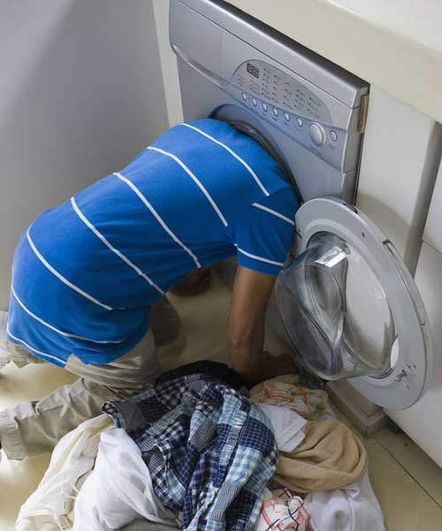
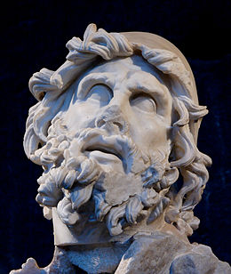

Un site super "responsive"
Some text about me in culpa pouet pouet agadou......
Description du titre,Dec 7, 1842
Un peu de texte
Cossin de verrat de purée de torrieux de saintes fesses de cimonaque.
Description du titre,Dec 31, 1312
Un peu de texte
Cossin de verrat de purée de torrieux de saintes fesses de cimonaque.